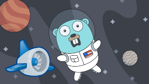

Go on App Engine

This post is the code for the official 'Hello World' tutorial.
Download the App Engine SDK for Go
wget https://storage.googleapis.com/appengine-sdks/featured/go_appengine_sdk_linux_amd64-1.9.36.zip
unzip go_appengine_sdk_linux_amd64-1.9.36.zip
add to .bashrc: export PATH=$PATH:$TMP/apps/go_appengine/
which goapp
Test the app on your laptop
git clone git@github.com:oren/appengine.git
cd appengine
goapp serve
Create an app on Google's dashboard and copy the app id (my app id is hello-1292)
https://console.cloud.google.com/home/dashboard
Deploy
appcfg.py -A hello-1292 -V v1 update .
Enjoy
http://hello-1292.appspot.com
Resources
- My github repository with this code sample - https://github.com/oren/appengine